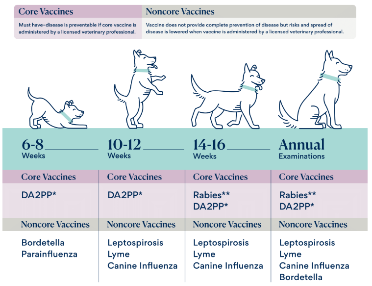
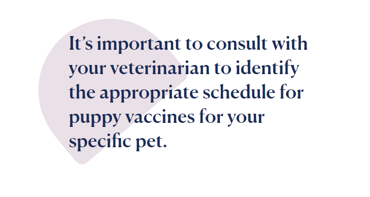

Dog & Puppy Health
Puppy and Dog Vaccinations: A Schedule for Every Life Stage
Dog vaccinations are critical to ensuring your four-legged friend stays healthy from puppyhood into their senior years. Vaccines are the safest and most cost-effective way to protect your dog from many infectious preventable diseases.
The science behind canine vaccinations has progressed significantly over the past decade, enhancing both their safety and efficacy against existing and emerging pathogens. Here’s why vaccinating a dog is important.
What Are the Common Dog Vaccinations?
Dog vaccinations are split into two general categories: core vaccines and noncore vaccines.
Dog & Puppy Health
Puppy and Dog Vaccinations: A Schedule for Every Life Stage
Dog vaccinations are critical to ensuring your four-legged friend stays healthy from puppyhood into their senior years. Vaccines are the safest and most cost-effective way to protect your dog from many infectious preventable diseases.
The science behind canine vaccinations has progressed significantly over the past decade, enhancing both their safety and efficacy against existing and emerging pathogens. Here’s why vaccinating a dog is important.
What Are the Common Dog Vaccinations?
Dog vaccinations are split into two general categories: core vaccines and noncore vaccines.
Core Vaccines
- Canine distemper/adenovirus-2 (hepatitis)/parvovirus/parainfluenza vaccine (given as one vaccine, commonly referred to as DA2PP, DHPP, or DAPP)
- Rabies virus vaccine
Noncore Vaccines
Noncore vaccines (also called lifestyle vaccines) are considered optional and given based on factors such as your pet’s lifestyle and where you live. Several noncore vaccines protect against highly contagious or potentially life-threatening diseases.
To determine which lifestyle vaccines are appropriate for your dog, your vet will look at a variety of factors, including:
- Geographic location and risk of disease in these areas
- Whether your pet goes to doggy day care, dog parks, or boarding or grooming facilities
- Whether your pet’s lifestyle includes traveling, going on hikes, or being exposed to wilderness or bodies of water
- The overall health of your pet
Puppy Vaccine Schedule
For puppy vaccines to provide necessary protection, they’re given every two to four weeks until a puppy is at least 16 weeks old. Some dogs in high-risk areas may benefit from receiving the last vaccines around 18–20 weeks old.
Here’s an example of what a typical puppy shot schedule looks like:
| Age | Core Vaccines | Noncore Vaccines |
|---|---|---|
| 6–8 Weeks | DAP | Bordetella Parainfluenza (often included in DAP combo vaccine) |
| 10–12 Weeks | DAP | Leptospirosis Lyme Canine influenza |
| 14–16 Weeks | DAP (vets prefer giving final DAP vaccine at 16 weeks or later) | Rabies vaccine (may be given earlier if required by law) Leptospirosis Lyme |
Ultimately, it’s important to consult with your veterinarian to identify the appropriate schedule for puppy vaccines for your specific pet.
Adult Dog Vaccine Schedule
Adult dogs need their core vaccines (DAP and rabies vaccines) in addition to any noncore vaccines decided upon between you and your veterinarian. A dog vaccination schedule for an adult dog may look like this:
| Frequency | Core Vaccines | Noncore Vaccines |
|---|---|---|
| Annual vaccines for dogs | Rabies (initial vaccine) | Leptospirosis Lyme Canine influenza Bordetella (sometimes given every 6 months) |
| Dog vaccines given every 3 years | DAP Rabies (after initial vaccine, given every 3 years) |
No 3-year noncore vaccines are available at this time. |
If your dog is overdue or if it’s their first time getting a vaccine, your vet may recommend a booster vaccine or an annual schedule so your pet is fully protected.
What Diseases Do Dog Vaccines Prevent?
Keeping up with your dog vaccinations is the best way to protect your pup from many different illnesses, including:
Rabies
Rabies is a virus that causes neurologic disease that is fatal for domestic pets, wildlife, and people. It’s most notably transmitted through a bite from an infected animal. If your dog has rabies, it can be transmitted to you or other people through bite wounds.
The rabies vaccine is required by law in the U.S. And despite the excellent vaccination system we have, there are still animals and people that come down with rabies every year.
-
Distemper/Adenovirus (Hepatitis)/Parvovirus (DAP)
The DAP vaccine protects against a combination of diseases that can spread quickly among dogs and have serious implications for canines, including severe illness and death.
Bordetella and Canine Parainfluenza
Bordetella and canine parainfluenza virus are two agents associated with a highly contagious cough commonly known as kennel cough, or canine infectious respiratory disease complex (CIRDC).
Diseases from these agents typically resolve on their own but sometimes can lead to pneumonia or more severe respiratory disease. Because kennel cough is so contagious, boarding and doggy day care facilities across the U.S. require your pet to have this vaccine.
Dog neutering – a guide to castration and spaying
What is neutering?
Neutering is a routine procedure that involves removing your dog’s sex organs to prevent unwanted pregnancies, pregnancy related illness, and conditions such as testicular, ovarian, and mammary cancers. The male procedure is called castration, and the female procedure is called spaying.
Why neuter?
Some of the benefits of neutering include:
The benefits of neutering a female dog include:
- Prevents seasons
- Prevents pregnancy
- Prevents womb infections (pyometra)
- Prevents false pregnancies
The benefits of neutering a male dog include:
- Prevents testicular cancer
- Prevents testicular cancer
- Reduces the chance of prostate problems such as Benign Prostatic Hyperplasia (BPH) later in life
- Reduces the urge to seek out a female dog to mate with, and therefore reduces the urge to roam away from home
What will happen when my dog is neutered?
Before
- Food – you will need to starve your dog for 6-8 hours before they go under anaesthetic, i.e. give them dinner the night before, but no breakfast or treats on the morning of their operation. This is to make sure their stomach is empty so they don’t regurgitate and choke under anaesthetic.
- Water – you can leave water down for your dog until 2-3 hours before they go in for their operation, i.e. take it away at 6-7am the morning of their surgery.
- Health – if your dog has been poorly in the days leading up to their operation, let your vet know so they can give them a check over and make sure they are fit for surgery.
The operation
- Your vet will check your dog over, give them a light sedative and some pain relief, and settle them in a warm, comfortable kennel.
- Once the sedative has taken effect, your dog will be put under a full/general anaesthetic.
- They will then be carefully monitored, while their surgery site is clipped and cleaned ready for the procedure.
- If your dog is female, your vet will make a small incision along the middle of her tummy so her ovaries and womb can be carefully removed.
- If your dog is male, your vet will make a small incision just above the testicles so that both testicles can be carefully removed.
FAQs
Will neutering make my dog fat?
Due to the hormonal changes associated with neutering, your dog will need around 30% less calories once they have been spayed or castrated. We recommend that you reduce your dog’s portion sizes, or find a food specifically for neutered dogs, which is naturally lower in calories. If your dog is putting on weight after neutering, talk to your vet or vet nurse about the best ways to keep them in shape.
Will neutering change my dog’s personality?
If your pet is confident, happy and well socialised, then it’s very unlikely that neutering them will change their behaviour or personality.
However, if they are under-confident, fearful, or have behavioural problems, neutering could make them worse. This is because sex-hormones such as testosterone, tend to boost confidence, so a reduction in these hormones away at the wrong time might reduce your dog’s confidence, making them more fearful and/or aggressive.
When is the best time to neuter a large/giant breed dog?
If your dog is a large or giant breed, your vet may advise waiting until they are a bit older before neutering them. This is because they are likely to take longer to reach their adult size, and their growth plates (which control bone growth), take a few months longer to close. There is some evidence to show that neutering large/giant breed dogs at 4-6 months can lead to joint problems in later life. Always speak to your vet about the best time to neuter your dog.
Does neutering help reduce aggression in dogs?
We now know that neutering doesn’t prevent aggression in dogs, and in some circumstances, can even make it worse. If your dog is showing signs of aggression, we advise speaking to your vet and an ABTC accredited pet behaviourist ASAP – getting help early is extremely important.
I am a PDSA client, how do I get my dog neutered?
We face a huge demand for our services at PDSA, and although our priority is urgent and lifesaving treatment, wherever possible we also provide preventive services such as neutering. To find out whether your local PDSA is offering neutering visit our eligibility checker. If your local PDSA is unable to offer neutering at present, we recommend that you try another local vet practice. Don’t worry, if you are registered with PDSA client and have your dog neutered elsewhere, you will stay registered with us should they become unwell at any point.
Dogs Available for Adoption >
300+ pets available on Pawppies
MEET THEM
{{ animal.name }}
{{ animal.age }}, {{ animal.breedDetails.name }}